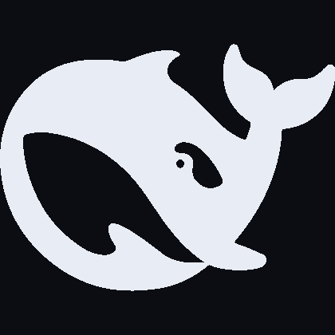

DEEPSEEK HARNESS · 插件
第一九三号
创作模式
CREATION MODE
一九三种代码动画风格◆说一句话就出片
「创作模式」是 DeepSeek Harness 的一个 Agent 模式。描述需求后，它先推荐风格并附参考画面，再拆解分镜，最后以 HTML 与 Canvas 直接生成成片——全程只调用一次模型。
一
选风格时先看参考画面，193 种每种都配了图
二
分镜逐场写明画面、字幕、运镜与卡点，确认后才开始生成
三
成品在对话里预览，一键导出 MP4，不用 ffmpeg
四
配乐按风格自动选：古筝、钢琴、小提琴、8-bit 脉冲波
零依赖 · 不联网 · MIT 许可
需求 风格 分镜 成片全程在同一个对话里完成
HARNESS
＋ 新会话
插件
自动化任务
更多
工作区
默认
像素风格动画创作
片头三秒
插件
安装、启用和配置插件
已安装插件
◈
dsh-computer-use-winWindows computer use for DeepSeek Harness
创作模式193 种代码动画风格 · 说一句话就出片
◐
dsh-opencode-go多账号模型网关 · 用量与可见性配置
实验性插件
✦
自动授权审查模型在每次工具调用前判断是否授权
◧
开发者工具查看调试会话原始数据与消息分组
$dsh plugin --profile web add -w dsh-creation-mode
+ dsh-creation-mode 3.0.0 Done in 1.2s
193风格已上架
193参考静帧
16乐器配乐
5创作工具
0外部依赖